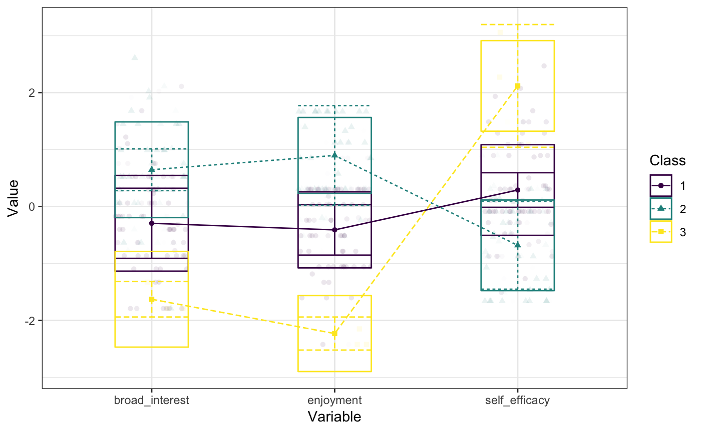

tidyLPA
Please note that in the development (the version on GitHub here; 1.0.0) version of tidyLPA introduces major (exciting - but breaking!) version. Please do not hesitate to reach out with any questions or issues that you encounter.
You can read about some of the major changes here.
Note that the version presently on CRAN (0.2.4) does not represent the new changes yet, though these changes will be made soon. Thus the old version can be downloaded from CRAN or can be downloaded with the following function:
devtools::install_github("data-edu/tidyLPA", ref = "ab36357")Background
Latent Profile Analysis (LPA) is a statistical modeling approach for estimating distinct profiles, or groups, of variables. In the social sciences and in educational research, these profiles could represent, for example, how different youth experience dimensions of being engaged (i.e., cognitively, behaviorally, and affectively) at the same time.
tidyLPA provides the functionality to carry out LPA in R. In particular, tidyLPA provides functionality to specify different models that determine whether and how different parameters (i.e., means, variances, and covariances) are estimated and to specify (and compare solutions for) the number of profiles to estimate. The package is designed and documented to be easy to use, especially for beginners to LPA, but with fine-grained options available for estimating models and evaluating specific output as part of more complex analyses.
Installation
You can install tidyLPA from CRAN with:
install.packages("tidyLPA")You can also install the development version of tidyLPA from GitHub with:
install.packages("devtools")
devtools::install_github("data-edu/tidyLPA")Example
Mclust
Here is a brief example using the built-in pisaUSA15 data set and variables for broad interest, enjoyment, and self-efficacy. Note that we first type the name of the data frame, followed by the unquoted names of the variables used to create the profiles. We also specify the number of profiles and the model. See ?estimate_profiles for more details.
In these examples, we pass the results of one function to the next by piping (using the %>% operator, loaded from the dplyr package). We pass the data to a function that selects relevant variables, and then to estimate_profiles:
pisaUSA15[1:100, ] %>%
select(broad_interest, enjoyment, self_efficacy) %>%
single_imputation() %>%
estimate_profiles(3)
#> tidyLPA analysis using mclust:
#>
#> Model Classes AIC BIC Entropy prob_min prob_max n_min n_max
#> 1 3 637.190 673.662 0.741 0.034 0.864 0.210 0.570
#> BLRT_p
#> 0.020Mplus
We can use Mplus simply by changing the package argument for estimate_profiles():
pisaUSA15[1:100, ] %>%
select(broad_interest, enjoyment, self_efficacy) %>%
single_imputation() %>%
estimate_profiles(3, package = "MplusAutomation")
#> tidyLPA analysis using mplus:
#>
#> Model Classes AIC BIC Entropy prob_min prob_max n_min n_max
#> 1 3 635.798 672.270 0.805 0.846 0.950 0.030 0.650
#> BLRT_p
#> 0.000A simple summary of the analysis is printed to the console (and its posterior probability). The resulting object can be further passed down a pipeline to other functions, such as plot, compare_solutions, get_data, get_fit, etc. This is the “tidy” part, in that the function can be embedded in a tidy analysis pipeline.
If you have Mplus installed, you can call the version of this function that uses MPlus in the same way, by adding the argument package = "MplusAutomation.
Plotting the profiles
We can plot the profiles by piping the output to plot_profiles().
pisaUSA15[1:100, ] %>%
select(broad_interest, enjoyment, self_efficacy) %>%
single_imputation() %>%
scale() %>%
estimate_profiles(3) %>%
plot_profiles()
#> Warning:
#> One or more analyses resulted in warnings! Examine these analyses carefully: model_1_class_3
Model specification
In addition to the number of profiles (specified with the n_profiles argument), the model can be specified in terms of whether and how the variable variances and covariances are estimated.
The models are specified by passing arguments to the variance and covariance arguments. The possible values for these arguments are:
-
variances: “equal” and “zero” -
covariances: “varying”, “equal”, and “zero”
If no values are specified for these, then the variances are constrained to be equal across classes, and covariances are fixed to 0 (conditional independence of the indicators).
These arguments allow for four models to be specified:
- Equal variances and covariances fixed to 0 (Model 1)
- Varying variances and covariances fixed to 0 (Model 2)
- Equal variances and equal covariances (Model 3)
- Varying variances and varying covariances (Model 6)
Two additional models (Models 4 and 5) can be fit using MPlus. More information on the models can be found in the vignette.
Here is an example of specifying a model with varying variances and covariances (Model 6; not run here):
pisaUSA15[1:100, ] %>%
select(broad_interest, enjoyment, self_efficacy) %>%
single_imputation() %>%
estimate_profiles(3,
variances = "varying",
covariances = "varying")Comparing a wide range of solutions
The function compare_solutions() compares the fit of several estimated models, with varying numbers of profiles and model specifications:
pisaUSA15[1:100, ] %>%
select(broad_interest, enjoyment, self_efficacy) %>%
single_imputation() %>%
estimate_profiles(1:3,
variances = c("equal", "varying"),
covariances = c("zero", "varying")) %>%
compare_solutions(statistics = c("AIC", "BIC"))Citing tidyLPA
Rosenberg, J. M., Beymer, P. N., Anderson, D. J., & Schmidt, J. A. (2018). tidyLPA: An R Package to Easily Carry Out Latent Profile Analysis (LPA) Using Open-Source or Commercial Software. Journal of Open Source Software, 3(30), 978, https://doi.org/10.21105/joss.00978
You can also cite the most latest version with the following citation:
Rosenberg, J. M., van Lissa, C. J., Beymer, P. N., Anderson, D. J., Schell, M. J. & Schmidt, J. A. (2019). tidyLPA: Easily carry out Latent Profile Analysis (LPA) using open-source or commercial software [R package]. https://data-edu.github.io/tidyLPA/
Contributing and Contact Information
One of the easiest but also most important ways to contribute is to post a question or to provide feedback. Both positive and negative feedback is welcome and helpful. You can get in touch by . . .
- Sending a message via tidylpa@googlegroups.com or view the the tidyLPA group page (preferred)
- Filing an issue on GitHub here
Contributions are also welcome via by making pull requests (PR), e.g. through this page on GitHub. It may be easier if you first file an issue outlining what you will do in the PR. You can also reach out via the methods described above.
Please note that this project is released with a Contributor Code of Conduct. By participating in this project you agree to abide by its terms.